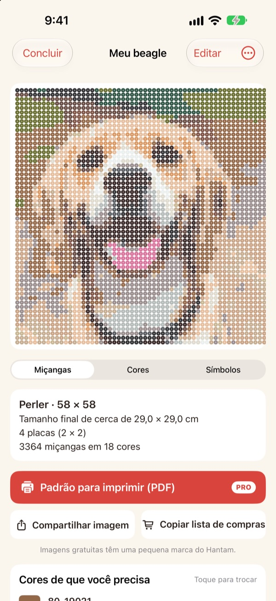
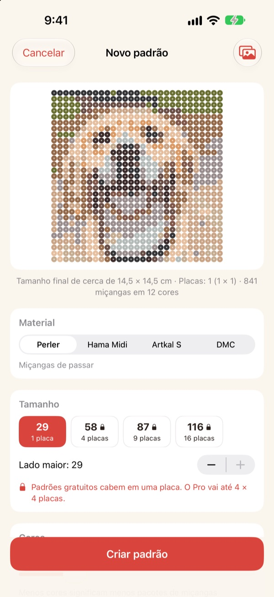
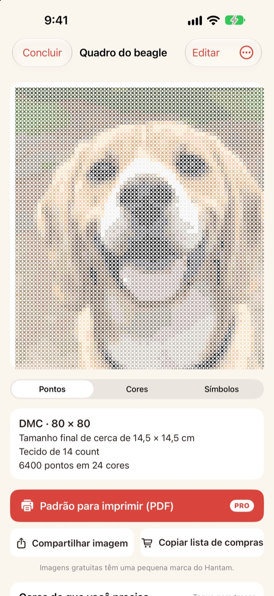
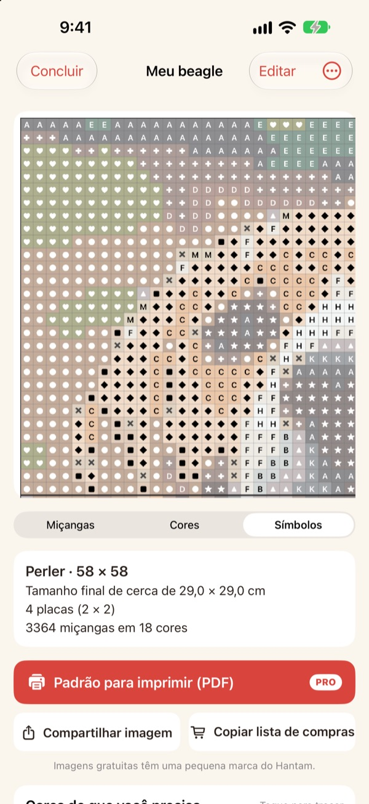
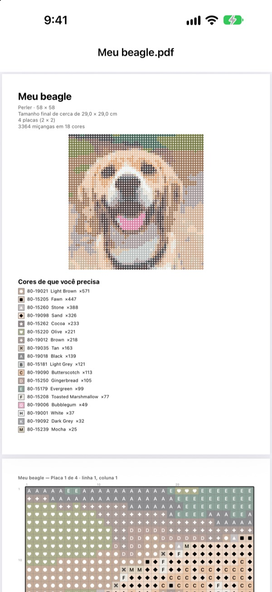

Uma foto
vira um padrão
Escolha uma foto do seu pet, do seu rosto ou do seu personagem favorito. O Hantam transforma em um padrão de miçangas de passar ou de ponto cruz, com cores que você consegue comprar.
Grátis para padrões de uma placa. Suas fotos não saem do iPhone.

Teste com uma foto
É o mesmo jeito de escolher cores que o app usa, com a cartela real da Perler. Mude o tamanho e o número de cores, ou teste com uma foto sua.
Fazer um padrão é fácil. Bater com miçangas de verdade, nem tanto
Pixelize uma foto em qualquer editor e você terá cores que nenhuma miçanga ou linha tem. Aí é preciso adivinhar de qual pote vem cada quadradinho e contar quantas comprar de cada cor. O Hantam escolhe só entre cores que existem à venda e diz exatamente quantas você precisa.
Cores reais, números reais
Escolha miçangas Perler, Hama Midi ou Artkal S, ou linha DMC. Cada quadradinho recebe uma cor que a marca vende de verdade, com o número dela.
Você define o tamanho e quantas cores usar. Padrões grandes são divididos em placas de 29 × 29.

Ponto cruz também
Escolha linha DMC e a mesma foto vira um gráfico de ponto cruz. Selecione talagarça Aida 11, 14, 16 ou 18 e o Hantam mostra o tamanho final e quantos pontos cada cor leva.

Você sabe exatamente o que comprar
Troque para o gráfico de símbolos e siga quadradinho por quadradinho, com linhas grossas em cada borda de placa ou a cada 10 pontos. Veja quantas miçangas cada cor leva e use Copiar lista de compras com um toque.
Toque em um quadradinho para mudar, ou troque uma cor por outra no padrão inteiro.

Imprima e comece
Com o Pro, exporte um Padrão para imprimir (PDF): primeiro a lista de cores, depois os gráficos de símbolos, placa por placa.

Três passos até o padrão
- 1
Escolha uma foto
Pets, rostos, logos e personagens funcionam. Fotos com um tema bem claro ficam melhores.
- 2
Escolha miçangas ou linha
Defina a marca, o tamanho e quantas cores.
- 3
Mãos à obra
Siga o padrão na tela ou imprima com o Pro.
Materiais e tamanhos
- Perler · Hama Midi · Artkal S
- Miçangas de passar, placas de 29 × 29, cada miçanga com cerca de 5 mm
- DMC
- Linha de ponto cruz em talagarça Aida 11, 14, 16 ou 18
- Grátis
- Miçangas até 1 placa (29 quadradinhos), linha até 40 pontos no lado maior
- Pro
- Miçangas até 4 × 4 placas (116 quadradinhos), linha até 200 pontos
- Cores
- De 2 a 50 por padrão
Perler, Hama, Artkal e DMC são marcas de seus respectivos donos. O Hantam não tem vínculo com elas. As cores na tela podem ficar um pouco diferentes das reais.
Comece grátis. Use o Pro para padrões grandes e impressão.
Grátis
- Padrões de até uma placa ou 40 pontos
- Todas as marcas: Perler, Hama, Artkal e DMC
- Quantidade por cor, lista de compras e troca de cores
- Até 3 padrões salvos
- Imagens para compartilhar com uma pequena marca do Hantam
Hantam Pro
- Padrões em PDF para imprimir
- Até 4 × 4 placas ou 200 pontos
- Padrões salvos sem limite
- Imagens sem marca
- Todas as ferramentas de pixel art
Assinatura mensal ou anual, ou compra única vitalícia
Você também pode dar o Pro de presente a um amigo pelo app.
Perguntas frequentes
Minhas fotos são enviadas para algum lugar?
Não. Fotos e padrões são processados e salvos só no seu iPhone.
As cores parecem um pouco diferentes das minhas miçangas.
A tela mostra as cores de um jeito diferente do plástico e da linha. Toque em uma cor da lista para trocá-la por outra mais parecida da mesma marca.
Qual o tamanho máximo de um padrão?
No grátis, uma placa de 29 × 29 ou 40 pontos no lado maior. Com o Pro, até 4 × 4 placas (116 miçangas) ou 200 pontos.
Que fotos ficam melhores?
As que têm um só tema e um fundo simples. Quanto menos cores, mais limpo o padrão. Se o resultado parecer bagunçado, diminua o número de cores.
Ainda dá para fazer pixel art?
Dá. Pixelizar fotos, desenhar com 110 modelos e animar quadro a quadro continua tudo lá. Todas as ferramentas de pixel art estão no Pro.
Como restauro minha compra?
Abra os ajustes do app e toque em Restaurar Compras. Use a mesma Conta Apple com que você comprou o Pro.
Como cancelo a assinatura?
Vá em Ajustes do iPhone › seu nome › Assinaturas e escolha Hantam. O acesso vitalício é um pagamento único e nunca renova.
Como relato um erro ou sugiro uma ideia?
O jeito mais rápido é enviar feedback pelos ajustes do app. Você também pode escrever para o e-mail abaixo ou mandar uma DM no Instagram (@lee25_ios).
Dúvidas, erros e ideias são bem-vindos em leeo@kakao.com.